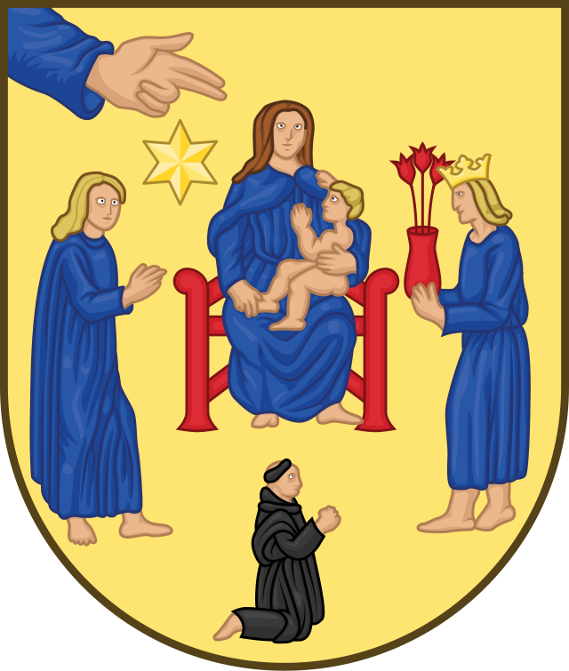
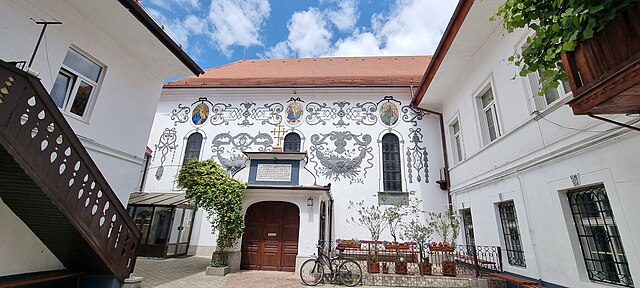
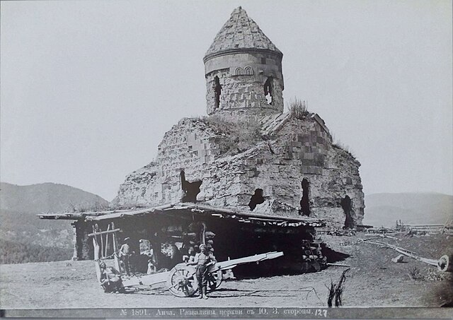
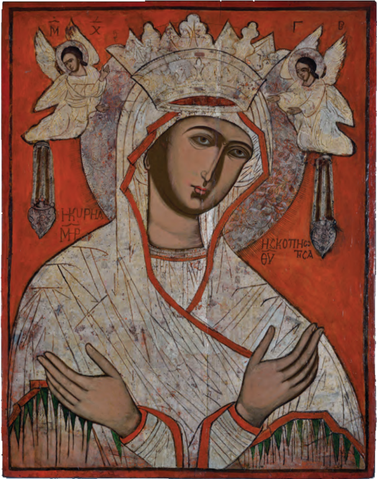
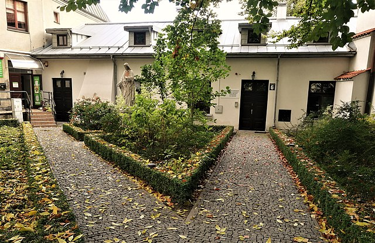
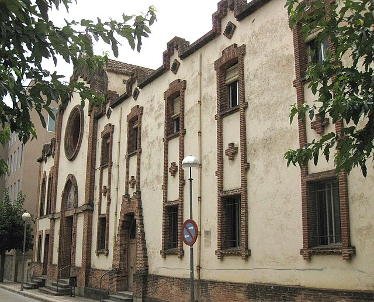
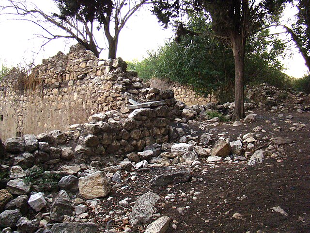

Coat of arms of Ringsted.svg

Ro Bv Sf Treime (1)

Orthodox church near Nekresi monast...

1891 - Алъ. Развалини церкви съ юго...

Bogorodica Skopiotisa, Greece, the ...

640px-Pafnutius

Lublin, Narutowicza 6; zespół klasz...

119 Convent de les Clarisses, c. Sa...

Maronite ruins